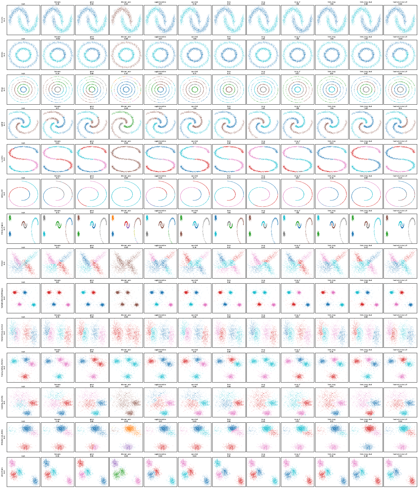
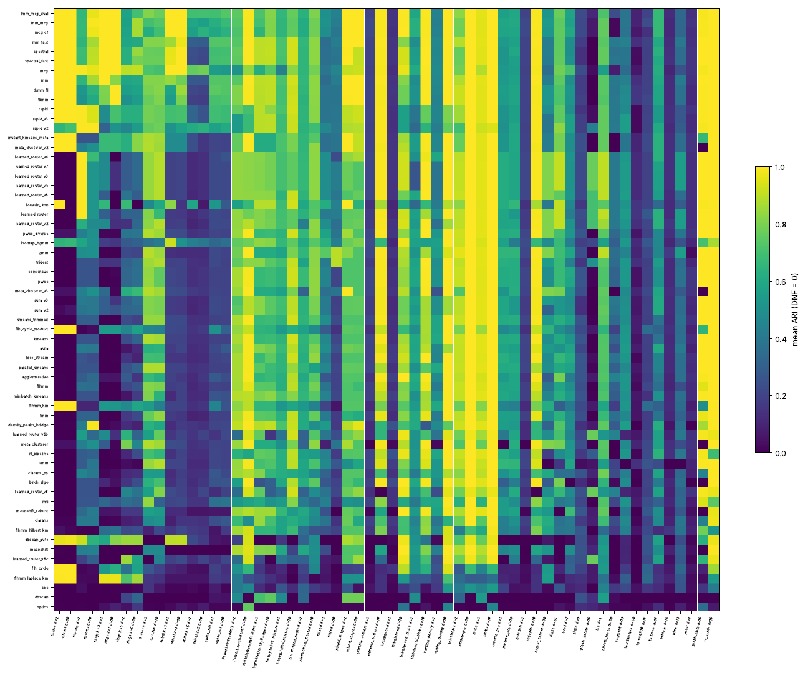
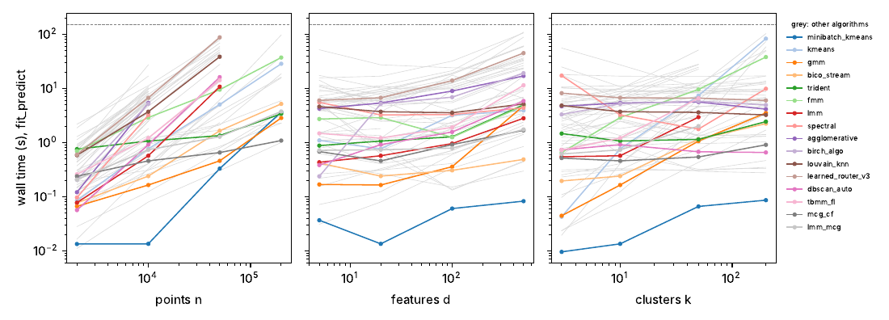
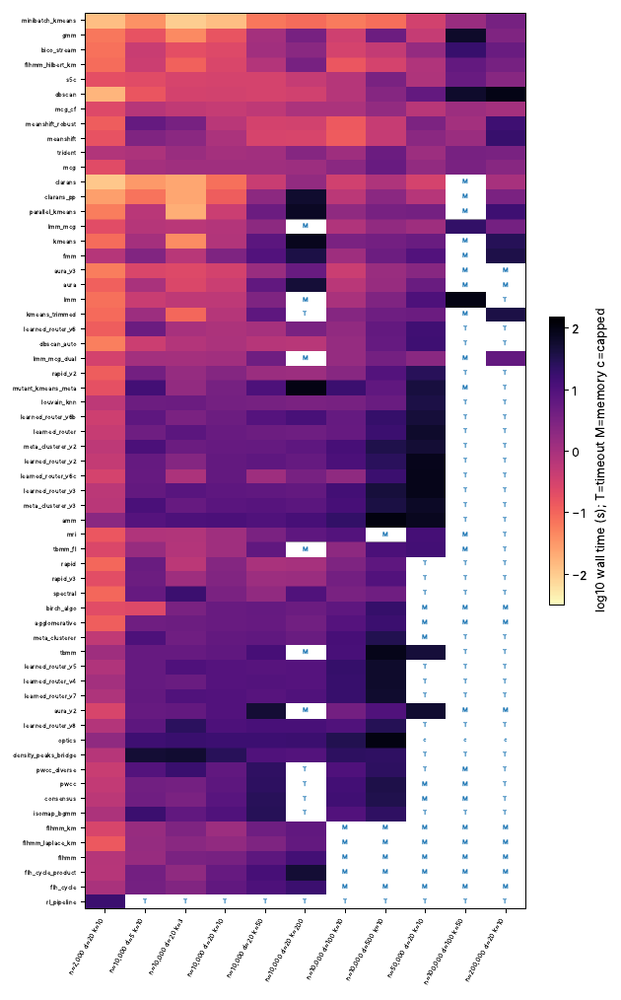

Overview
Algorithm comparison
Mean across all tasks in the current run. Bars are colored by algorithm.
Per-task leaderboard
Filter to narrow the table. ARI=1 means labels perfectly match ground truth.
| algo | dataset | n | d | k | compactness | outl. | noise | dens. | seed | ari | nmi | silhouette | wall_s | steps |
|---|
Every algorithm on every dataset: odd shapes and mixtures
Every algorithm was run on every dataset family below: non-convex shapes (moons, rings, spirals, ...), mixtures of differently shaped clusters, clusters of uneven density or size with outliers, classic convex blobs, real data sets and a few other synthetic sources. Scores are the adjusted Rand index (ARI, 1 = perfect agreement with the true labels, about 0 = no better than chance). A run that crashed or did not finish (DNF) counts as ARI 0, so an algorithm cannot look good by skipping hard cases. Click a column header to sort; pick a group to see each dataset family in it. The three best values in each ARI column are in bold.


Big-data scaling
How does each algorithm cope as the data grows? Starting from a base problem of n=10,000 points, d=20 features and k=10 clusters, one factor at a time is increased (n up to 200,000, d up to 500, k up to 200) while the other two stay at the base. Each run is limited to 120 s and 3 GB of memory. The exponents are log-log slopes of wall time against n, d or k: 1 means time grows linearly, 2 quadratically. DNF counts runs that hit the time limit, ran out of memory, or were skipped because a smaller size already failed (capped).


Graph clustering at large n
Graph-based methods are accurate on odd shapes but are usually slow on big data. Here 11 dataset families at d=20 were run at n=20,000 and n=100,000 with two seeds. lmm and spectral build an exact k-nearest-neighbour graph, whose cost grows quadratically in n; lmm_fast and spectral_fast use an approximate graph and an algebraic-multigrid (AMG) eigensolver; mcg, mcg_cf, lmm_mcg and lmm_mcg_dual build the graph on about 1,000 micro-clusters, so their cost grows linearly in n. Exact spectral is capped at 20k. Click a header to sort.
Each point is one algorithm at n=100,000: median wall time (log scale) against mean ARI. Up and to the left is better. Hover for the name.
Held-out dataset families
A check against overfitting: 35 tasks drawn from dataset families and settings that were not used to train or tune the learned routers. If a learned method only looked good because it had seen similar data, it should drop here. Mean ARI is over all held-out runs of that algorithm. Click a header to sort.
Dynamic rank tests
Average per-algorithm rank and Friedman χ² are computed in the browser
from the loaded result rows. Add a new algorithm to the benchmark output,
rebuild results.json, and this table recomputes automatically.
Average ranks
Friedman test per metric
| metric | χ² | p-value | k | n_tasks | significant |
|---|
Which algorithm wins, and when?
| # | algorithm | avg rank | wins | mean metric |
|---|
Lower average rank is better. Wins count task cells where the algorithm ranked first.
| condition value | best | best rank | runner-up | tasks |
|---|
Each row recomputes ranks using only tasks matching that condition value.
Metric vs dataset property (paper Figs 4.1-4.35)
Pick a metric and a dataset property. One line per algorithm shows how the metric varies with the property when the rest of the grid is averaged out. This subsumes the 35 fixed line plots in the paper into one parametric chart.
Trajectory viewer
Cost over optimization steps for iterative algorithms. Each curve is one
(algorithm, task) run. This is the raw state-action data — the step_idx
is the action index, cost is the scalar objective, and each point has
delta_cost attached as a reward signal for downstream RL /
latent-space models.